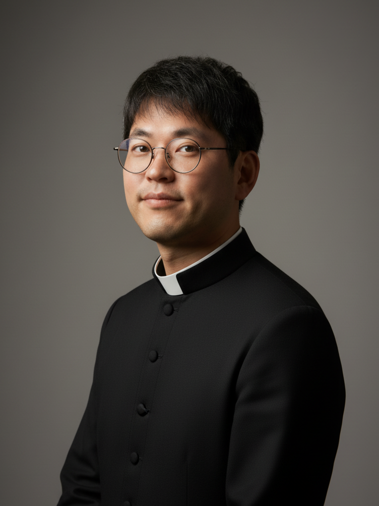

✝ Hamilton, Ontario · L8H 3Y5
성 유대철 한인성당
ST. PETER YU ROMAN CATHOLIC CHURCH
📍 6 Heath Street, Hamilton, ON L8H 3Y5
📞 905-545-3004
CATHOLIC NEWS
가톨릭 소식
✝
최신 소식을 불러오는 중입니다...
MASS SCHEDULE
미사 안내
✝ 정규 미사
| 주일미사 본당 | 일요일 오전 11:00 |
| 주일미사 공소 | 일요일 오후 5:30 |
| 화요일 | 오후 8:00 |
| 수요일 | 오전 11:00 |
| 첫째 목요일 | 오후 7:00 |
※ 매월 첫째 토요일 십자가의 길 오전 11:00
✝ 성사 및 신심 행사
| 고해성사 | 미사 전·후 |
| 성시간 | 매월 첫째 목요일 미사 중 |
| 십자가의 길 | 매월 첫째 토요일 11:00 |
| 유아세례 | 매월 마지막 주일 |
| 견진성사 | 2년마다 |
| 혼인성사 | 6개월 전 면담 |
※ 병자성사: 병환 중 · 임종 전 신부님께 연락
✝ 신심단체 모임
| 자비의 모후 | 매월 둘째 주일 미사 후 |
| 샛별 Pr. | 매주 일요일 오전 9:30 |
| 평화의 모후 Pr. | 매주 화요일 오후 6:30 |
| 천상의 어머니 Pr. | 매주 수요일 오전 9:30 |
| 바뇨 기도회 | 매월 1·3주 토요일 오전 10:00 |
| 울뜨레야 | 매월 첫째 목요일 성시간 후 |
※ 미사 시간 및 모임 일정은 변경될 수 있으니 주보를 확인해 주세요.
PASTOR
사목자 소개

✝ 주임 사제 · Pastor
김대하 신부님
사도 요한 (Joannes Apostolus)
Fr. John the Apostle Kim
하느님의 말씀을 전하고 형제자매 여러분과 함께 신앙의 여정을 걸어가는 것이 저의 기쁨이자 소명입니다.
순교 성인 유대철 베드로의 어린 나이에도 굳건했던 믿음을 본받아, 저희 공동체가 사랑과 일치 안에서 더욱 성장하도록 함께 노력합시다.
언제든지 어려운 일이 있으시면 편하게 연락 주시기 바랍니다.
순교 성인 유대철 베드로의 어린 나이에도 굳건했던 믿음을 본받아, 저희 공동체가 사랑과 일치 안에서 더욱 성장하도록 함께 노력합시다.
언제든지 어려운 일이 있으시면 편하게 연락 주시기 바랍니다.
CONTACT & LOCATION
오시는 길 · 연락처
📍 위치 및 연락처
주소
6 Heath Street
Hamilton, ON L8H 3Y5
Hamilton, ON L8H 3Y5
전화
905-545-3004
주임신부
김대하 사도 요한 신부
본당회장
권병학 사도 요한
🗺️ Google Maps에서 보기
🚗 교통 안내
자가용
성당 주차장 이용 가능
버스
HSR 버스 이용
Heath St 정류장 하차
Heath St 정류장 하차
Toronto
GO Train → Hamilton GO
이후 택시 이용
이후 택시 이용
📋 방문 안내
복장
단정한 복장 착용
착석
미사 10분 전 권장
초보자
언제든 환영합니다 😊
✝
오늘의 미사 전례를 불러오는 중입니다...
잠시만 기다려주세요